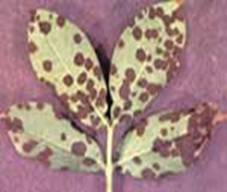
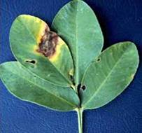

GROUNDNUT :: MINOR DISEASE :: LEAF SPOT
Leaf spot - Alternaria arachidisandA. tenuissima
Symptoms
Lesions produced by A. arachidis are brown in colour and irregular in shape surrounded by yellowish halos. Symptoms produced by A. tenuissima are characterized by blighting of apical portions of leaflets which turn light to dark brown colour. Lesions produced by A. alternata are small, chlorotic, water soaked, that spread over the surface of the leaf. The lesions become necrotic and brown and are round to irregular in shape. Veins and veinlets adjacent to the lesions become necrotic. Lesions increase in area and their central portions become pale, rapidly dry out, and disintegrate. Affected leaves show chlorosis and in severe attacks become prematurely senescent. Lesions can coalesce, give the leaf a ragged and blighted appearance.
|  |  |
Symptoms |
|
Management
- Foliar application of Mancozeb (2kg/ha) or Copper oxychloride (2kg/ha) or Carbendazim (500g/ha).